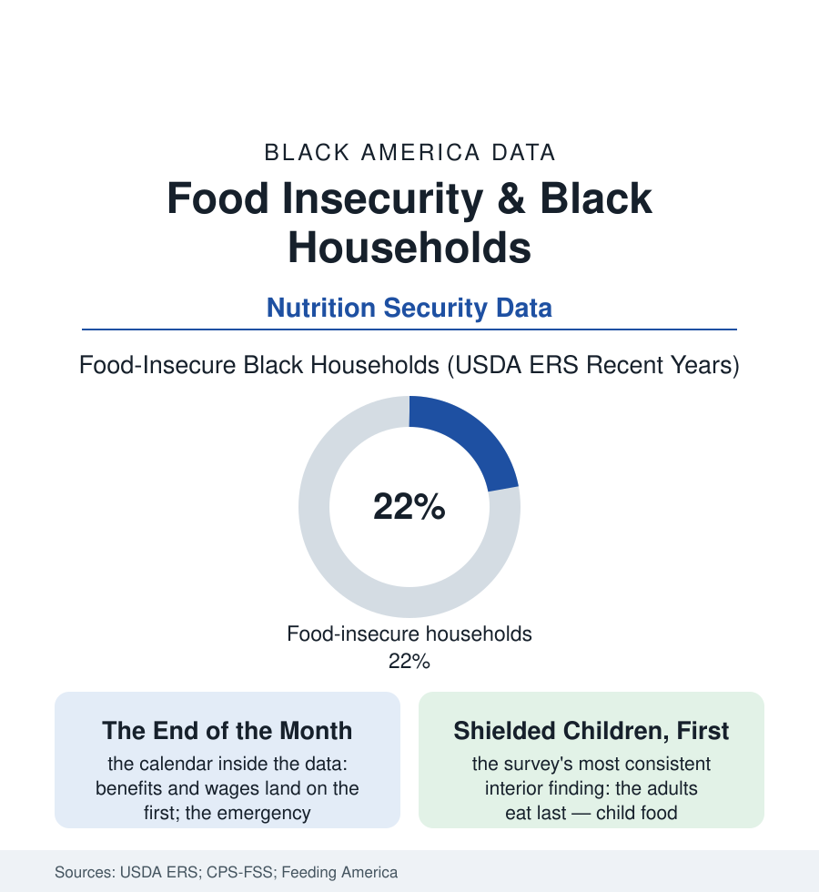

Black Public Health
The Empty Shelf: Food Insecurity in the Federal Measure
One Black household in five is food-insecure in the USDA's own measure — a rate twice the national line, in the richest food economy in human history. The hunger file.

The federal government asks the question every year, of tens of thousands of households, in a careful module of eighteen items: did you run out of food and not have money for more; did you cut the size of meals; did you ever not eat for a whole day. The answers, for Black households, have run for decades at roughly twice the national rate — one household in five, in the richest agricultural economy on earth. This article reads the hunger file.
The Measure and Its Calendar
The USDA's scale deserves its own respect: food insecurity in its accounting is not a metaphor but a threshold — the household's reported experience sorted from the marginal (the anxiety of the emptying shelf) through the low (the quality and variety surrendered) to the very low (the meals themselves skipped, the intake data's reductions measurable in the nutrition file's terms) — and the Black rates lead the table at every depth, the very-low category running near double the national figure in the ERS series, the child-present households shielded in the survey's most consistent interior pattern (the adults' intake cut first and deepest, the children's protected at a price the maternal health data itemize in the anemia and depression files). The file's calendar is its cruelest datum: hunger here is substantially a cash-flow event — the benefit and wage cycles' ends visible in the pantry line counts, the school-lunch file's weekend gap, the summer file's closed cafeterias, the emergency medicine literature's low-blood-sugar admissions cresting in the month's final days among the low-income diabetic rows — a rhythm that indicts not the food supply (the same months' grocery data show abundance a highway away) but the budget arithmetic of the income file, the rent paid first because the landlord is less patient than the stomach. The geography compounds in the expected direction — the rural Black South's rates the nation's highest in the county estimates, the food-access file's deserts overlaid — while the trend series record the system's partial mercy: the rates falling in the expansion years of the last decade's data, spiking with the shocks, the pandemic's benefit architecture (the emergency allotments, the universal school meals' brief era, the child tax credit's monthly months) driving the Black rate down measurably in the federal series — and its expiration driving the rebound the most recent ERS report records, a policy experiment run forward and backward within one survey's memory.
The Infrastructure of the Gap
What stands between the rate and zero is an infrastructure this atlas has inventoried piecemeal, and the file gathers it: the SNAP file's benefit — the average allotment's arithmetic leaving the last week uncovered by design's accident — the pantry network's tonnage (Feeding America's affiliates moving billions of pounds, their client demographics substantially this file's population, their newer models — the choice pantry, the school pantry, the produce prescription's farm-box — rebuilding the client's dignity into the logistics), the Black church's food ministry as the network's capillaries (the Wednesday distribution in the fellowship hall, the congregation that knows which elder's shelf is empty without being told — the faith file's welfare function in its most literal form), and the mutual-aid formations of the recent data (the community fridges, the buying clubs, the gardens of the urban-agriculture file) layering redundancy under the formal net. The file's closing arithmetic is the health section's by now familiar compound: the food-insecure household's chronic disease manages worse in every adherence study — the medication-or-food choice the pharmacy surveys quote in the patients' own words — so that the hunger rate is not one row of this section but a multiplier across its tables, from the diabetes file's control rates to the birth file's weights. A fifth of the households, twice the nation's rate, in the land of the hundred-billion-bushel harvest: the ERS publishes the number annually, in December, to modest notice. The pantry lines publish it weekly, in every city of this atlas, in a typeface of shopping carts and patience.
Reading the Food Security Data
The hunger file is the health section's foundation stone: before the nutrients, the access; before the access, the money for both. The USDA asks its eighteen questions each year and prints the answers without flinching. The shielding mothers of the interior data — eating last, answering for the household, keeping the children's row of the table lower than their own — are the file's authors as much as its subjects.
More in Black Public Health
Hypertension Among Black Adults: Prevalence, Control, and Consequences
About 55 percent of Black adults have hypertension — the highest rate of any U.S. group. Prevalence, onset, control, and the stroke, heart, and kidney consequences in the data.
Diabetes Among Black Adults: Prevalence and Complications
Nearly one in five Black adults has diabetes, diagnosed or undiagnosed — and its complications fall with particular weight. The CDC data on prevalence, control, and outcomes.
Black Life Expectancy: The Gap at Birth and Its Causes
Black life expectancy at birth is about 73 years, roughly five years below the national figure — the summary measure of every health gap in this section. The CDC data.
Source: U.S. Department of Agriculture Economic Research Service food security reports; Current Population Survey Food Security Supplement; Feeding America Map the Meal Gap; FRAC research.